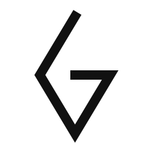
THE REDUCTIVE DIAMOND
Based strictly on the provided reference images: focusing on continuous line art, stark monochrome geometry, dot matrices, and pure minimalist abstraction.
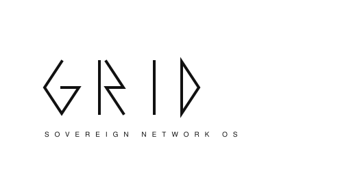
A purely reductive typographic mark using the 'ANTI' logic: minimal strokes and implied forms.
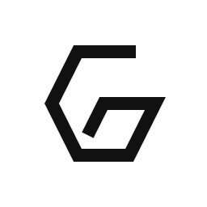
A single thick, angled line folding into a geometric grid shape.
Diamond-oriented dots forming a hidden 'G' within the matrix.
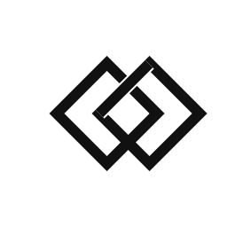
Overlapping, rotated squares creating a continuous line illusion.
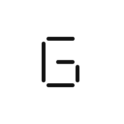
Extremely minimal, disjointed lines that suggest a 'G'.
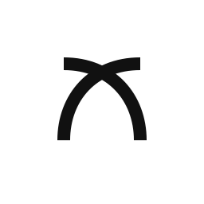
Curved lines intertwining symmetrically.
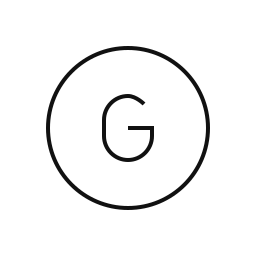
A perfectly centered, thin sans-serif 'G' in a precise circle.
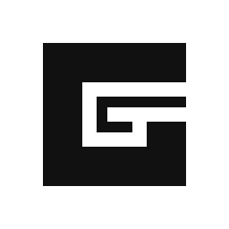
A stark black square with thin white lines cutting an abstract 'G'.
Stacked geometric angles symbolizing network flow.
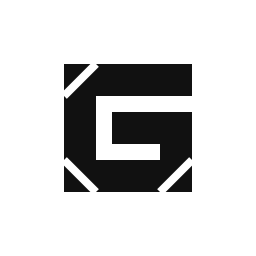
A bold geometric shape with cutouts giving a folded ribbon effect.
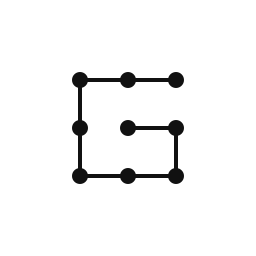
A classic 3x3 grid of dots connected by a single pathway.
Interwoven vertical and horizontal lines forming a structured network.
A geometric 'G' made from perfect half-circles and sharp straight lines.
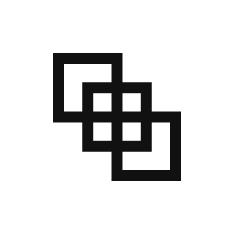
Three diagonally offset squares that blend to form negative space architecture.
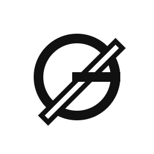
A bold, slanted line cutting through a perfect circle, evoking a subnet mask slash.
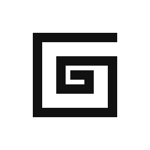
A single, continuous right-angled line entering from the perimeter and terminating at the center.
An isometric hollow cube where the interior structure forms a 'G'.
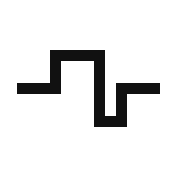
A horizontal baseline that steps up and down into a perfect square wave.
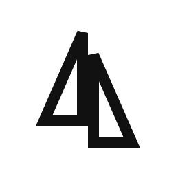
A sharp triangle cleanly sliced down the middle and offset vertically.
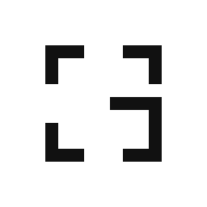
Four framing brackets `[ ]` enclosing a space, with one extended to close the loop.
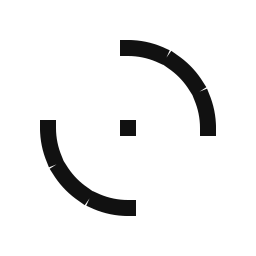
Morse-code-style dashes and geometric dots arranged in a precise circular orbit.
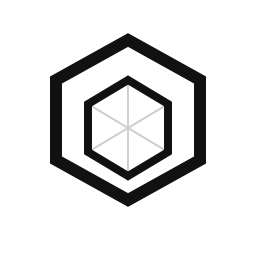
Interlocking hexagonal paths forming a structural mesh.
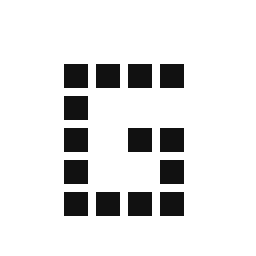
A 5x5 dot matrix where a 'G' is carved from negative space.
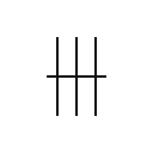
Ultra-thin vertical lines with a single horizontal slash.
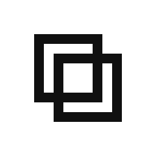
Two thick square frames woven together in a seamless braid.
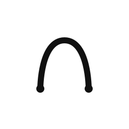
A smooth S-curve connecting two network terminals.
A bold, perfectly balanced circle 'G' with precise geometric gaps.
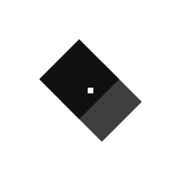
Two overlapping solid diamonds with a clinical grid intersection.
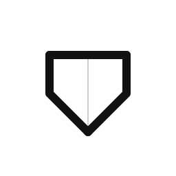
A geometric heart silhouette constructed from network nodes and paths.
A thick outer ring with a perfectly centered, isolated square node.
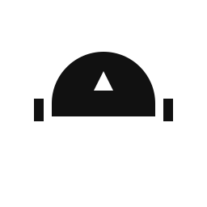
A minimalistic abstraction focusing on a tactical helmet's visor.
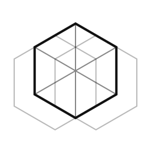
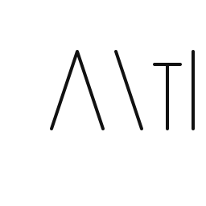
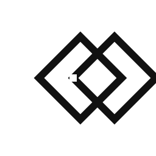
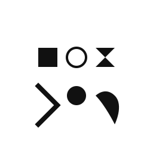
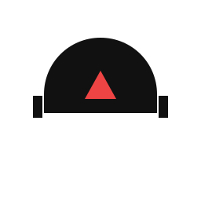